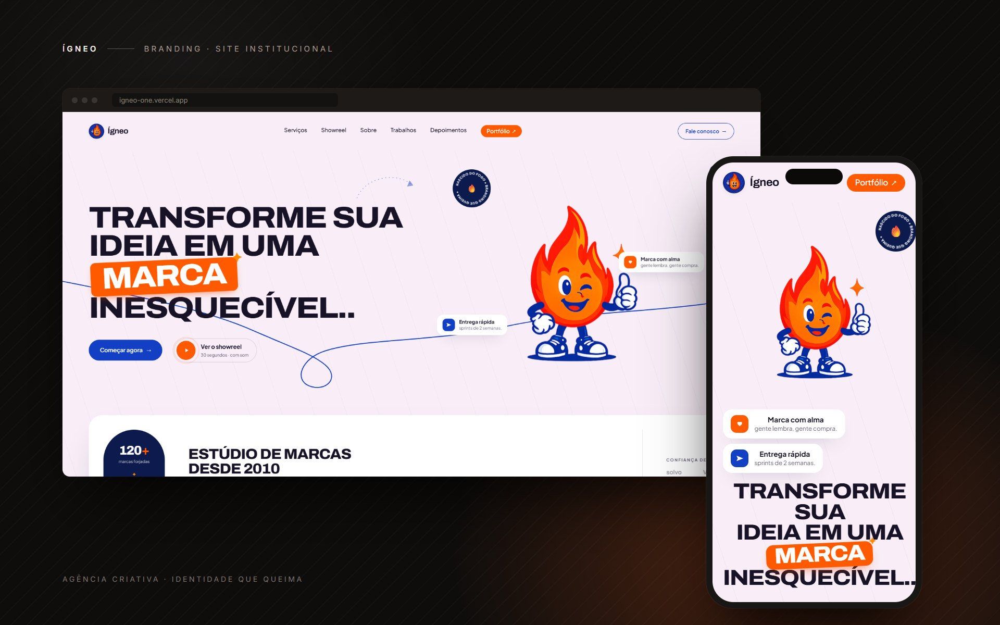

01Estudo de caso
Ígneo
Site institucional para um estúdio de branding que promete transformar ideias em marcas inesquecíveis — e que, por isso mesmo, não podia ter a cara de qualquer outra agência.

01
O desafio
Sites de agência criativa caem quase sempre na mesma fórmula: fundo escuro, tipografia neutra, foto de equipe em open space e a palavra "inovação" em algum lugar. O problema é evidente — um estúdio que vende diferenciação de marca não pode se apresentar de um jeito indistinguível dos concorrentes.
O desafio aqui não era construir mais uma landing page bonita. Era fazer o site provar a competência que ele anuncia: se a Ígneo diz que cria marcas memoráveis, a primeira prova disso precisa ser a própria página.
02
O conceito: nascido do fogo
Parti do nome. "Ígneo" é o que nasce do fogo — e daí saiu toda a linguagem do site, resumida na frase que virou o eixo do projeto:
A gente não faz logo. Faz fogueira.
Isso deu um critério objetivo para cada decisão seguinte: se um elemento não transmitia calor, energia ou movimento, ele estava no site errado. Foi o que definiu a paleta, o mascote e até o tom dos textos.
03
Decisões de design
Fundo claro, contra a corrente
Quase toda agência aposta no dark mode. Escolhi um creme quente com azul-marinho profundo e laranja incandescente no acento — a paleta puxa o conceito de fogo sem cair no clichê, e o contraste alto garante leitura confortável em qualquer tela.
Um mascote em vez de foto de banco de imagens
A chama ilustrada é o elemento mais arriscado e o mais rentável do projeto. Foto de equipe genérica não gera lembrança; um personagem próprio, sim. Ele dá à Ígneo um ativo visual reutilizável em redes sociais e apresentações — exatamente o tipo de entrega que a agência vende.
Estrutura editorial numerada
As seções são marcadas como 01 — Sobre, 02 — Serviços, 03 — Por que a Ígneo, e assim por diante. Isso transforma a rolagem em uma narrativa com começo, meio e fim, em vez de blocos empilhados sem hierarquia. O visitante sempre sabe onde está.
Números no lugar de adjetivos
Em vez de "somos experientes", o site mostra 120+ marcas criadas, 9,7 milhões de pessoas alcançadas, 98% de aprovação na primeira proposta e +64% de conversão mediana. Dado concreto convence; adjetivo, não.
Tipografia como identidade
Archivo em peso e largura variáveis nos títulos, Plus Jakarta Sans no texto corrido. Os títulos ocupam a tela em caixa alta e peso alto — a tipografia carrega a personalidade da marca, o que dispensa ornamentos e mantém a página leve.
04
A construção
O site é HTML e CSS puros, sem uma linha de JavaScript. Não foi limitação, foi escolha: tudo que o projeto pedia — layout responsivo, seções ancoradas, estados de hover — o CSS moderno resolve sozinho com Grid, Flexbox, propriedades customizadas e rolagem suave nativa.
O resultado é uma página que carrega praticamente instantânea, funciona mesmo se algum script falhar e não tem dependência nenhuma para manter. Para um site institucional, adicionar um framework aqui seria custo sem retorno.
05
Resultado
O site entrega uma identidade que ninguém confunde com a de outra agência, e faz isso com a stack mais simples possível. As seis frentes de serviço ficam claras logo na primeira rolagem, os números sustentam a promessa e o mascote dá à marca um rosto que sobrevive fora do site.
O que levo deste projeto: quando o conceito é forte e definido cedo, ele vira um filtro que responde sozinho as decisões de design — e o resultado sai coerente sem precisar de esforço extra no final.